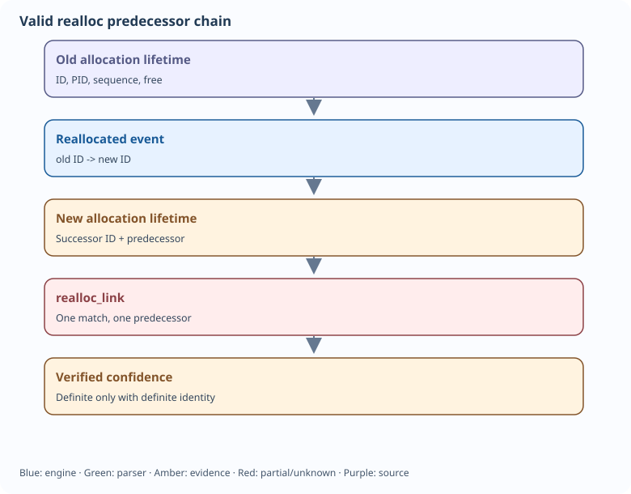
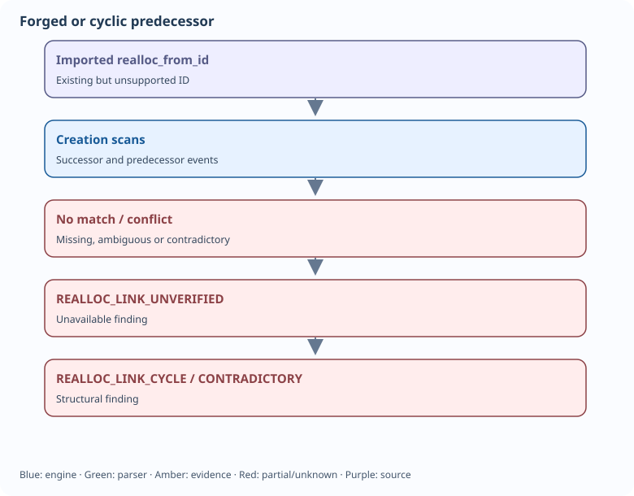
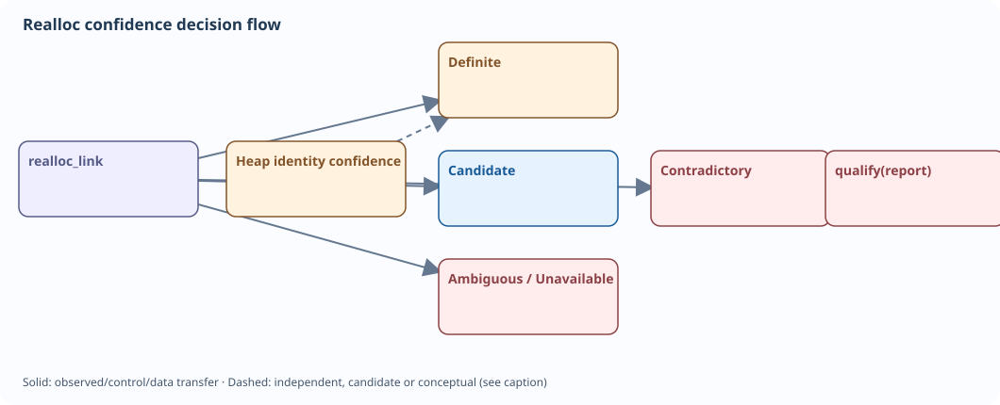

51 · Realloc provenance and TP8-F01 #
Key terms #
| Term | Plain meaning |
|---|---|
| Predecessor | The older allocation lifetime that a successful realloc actually continued from, if supported by recorded events. |
| Corroborate | Check other independent records—creation events, PID, sequence and lifetime boundaries—instead of trusting just one old_id number. |
>
The big picture #
The TP-8 audit found a correctness defect: an imported heap object could name an existing but wrong predecessor ID, and validation treated ID existence as sufficient. TP8-F01 changed both deep validation and TP-6 confidence to require recorded creation/event/lifetime corroboration. The repair is in realloc_link and validate_heap; the raw realloc_from_id field is preserved for investigation.
The defect in one sentence #
An allocation ID is a number in a sparse identity space. It is not proof that a realloc event connected that predecessor to this successor. The old check could answer "the ID exists" and accidentally answer "the relationship is true."
realloc_link #
Signature: pub(crate) fn realloc_link<'a>(block: &HeapBlockInfo, current: Option<&AllocationLifetime>, previous: Option<&AllocationLifetime>, events: impl Iterator<Item = &'a HeapEvent>, previous_events: impl Iterator<Item = &'a HeapEvent>) -> ReallocLink (src/trace_parser/validation.rs:1485-1566).
ReallocLink is Verified, Unavailable, Ambiguous or Contradictory (:1467-1473). The function receives only events indexed for the successor and predecessor, not the whole log.
The algorithm in execution order:
- If
block.realloc_from_idisNone, returnUnavailable: there is no recorded predecessor claim. - If the predecessor ID equals the successor ID, return
Contradictory: a non-terminal realloc cannot be its own predecessor. - If the predecessor ID is 0, return
Unavailable: 0 is the untracked domain, not a lifetime identity. - Scan successor creation events:
- terminal
realloc(ptr, 0)rows are skipped; - an
Allocatedevent for the successor is contradictory; - only
Reallocatedevents can establish the link; - a different
old_allocation_id, a non-reallocblock type, a PID mismatch, an allocation sequence that does not match, or a free boundary before the event is contradictory; - a missing
old_allocation_idsetsmissing = true. - Count predecessor creation events (
AllocatedorReallocated, excluding terminal zero realloc). A PID or sequence mismatch is contradictory. - More than one successor match or predecessor creation is
Ambiguous. - Missing corroboration, missing current/previous lifetime, a zero allocation sequence, or a predecessor without a free boundary is
Unavailable. - Exactly one compatible successor creation and one predecessor creation, with compatible lifetimes, is
Verified.
Terminal zero-size realloc #
terminal_zero_realloc recognizes the engine's recorded form: Reallocated, same ID as old_allocation_id, no address, and size 0 (:1475-1483). This is treated as a terminal free-shaped event, not a new lifetime or a self-link. The implementation does not claim this is universal C allocator behavior; it is the verified environment's recorded convention.
Validation integration #
validate_heap builds known IDs from heap state and lifetimes, linked successor IDs, related predecessor/successor IDs, and creations event lists (src/trace_parser/validation.rs:1568-1638). For each block with realloc_from_id:
- an unresolved origin is
REALLOC_ORIGIN_UNRESOLVED(unavailable); ContradictorybecomesREALLOC_LINK_CONTRADICTORY(structural corruption);AmbiguousorUnavailablebecomesREALLOC_LINK_UNVERIFIED(unavailable);Verifiedproduces no finding.
It also validates event-level origins (REALLOC_EVENT_ORIGIN_CONTRADICTORY) and walks predecessor chains with a visited/in_path set to report REALLOC_LINK_CYCLE (:1692-1834). A cycle is corruption even when events/lifetimes are missing. A terminal zero realloc is excluded from creation evidence at :1475-1483.
Confidence propagation #
TP-6 uses the same helper rather than duplicating the rule. ValidatedSemanticView::heap computes identity_confidence and realloc_confidence (src/trace_parser/semantic.rs:225-286):
- contradictory PID or malformed scope → contradictory;
- ID 0 or no lifetime/block → unavailable;
- complete observed-PID history with a verified process scope → definite identity;
- otherwise → candidate.
realloc_link maps to confidence:
| Helper result | Semantic confidence |
|---|---|
Verified + definite identity | Definite |
Verified + incomplete/legacy identity | Candidate |
Ambiguous | Ambiguous |
Unavailable / no block | Unavailable |
Contradictory | Contradictory |
qualify upgrades every result to Contradictory if the whole report has any structural corruption (src/trace_parser/semantic.rs:61-67). This is deliberately conservative: one bad imported relationship prevents any query from claiming Definite, rather than letting a local lookup ignore a global contradiction.
Special cases #
- In-place realloc: same address, new size; a new lifetime may be linked to the predecessor only through recorded events.
- Moved realloc: predecessor closes at the recorded sequence; successor has a new ID and an explicit old ID.
- Failed realloc: old block remains alive; no successor link.
- Address reuse: two lifetimes may share an address; address equality never joins them.
- Terminal
realloc(ptr,0): the observed environment may free the old ID and return null; the event is terminal, not a predecessor edge.
Tests and examples #
tests/trace_parser_realloc_f01.rs covers fresh in-place/moved realloc, forged predecessors, missing/ambiguous creation, cycles, terminal zero realloc and confidence. examples/trace_parser_tp8_audit.rs and examples/trace_parser_tp8_cycles.rs are preserved probes. tests/fixtures/stage1/realloc_move.json is a minimal recorded move fixture. These tests validate the implementation; they are not a rerun of the full Stage 1 corpus for DOC-3.
Diagram notes #
Valid predecessor chain #


Forged or cyclic predecessor #


Confidence decision flow #

